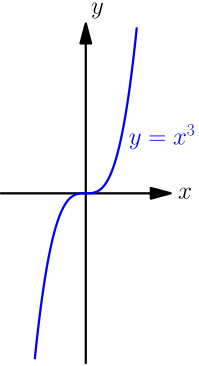

Simple Derivative Examples¶
Derivative of $x^2$¶
Let $f(x) = x^2$, and let $a$ be any number. By definition of derivative, the derivative of $f$ at $a$ is $$ \begin{align} \lim_{h \to 0} \frac{f(a+h)-f(a)}{h} &= \lim_{h \to 0} \frac{(a+h)^2-a^2}{h} \\ &= \lim_{h \to 0} \frac{a^2+2ah+h^2-a^2}{h} \\ &= \lim_{h \to 0} \frac{2ah+h^2}{h} \\ &= \lim_{h \to 0} 2a + \lim_{h \to 0} h = 2a. \end{align} $$
The derivative of the function $f(x) = x^2$ at any number $a$ is $2a$.
This means that if you place a tangent line on the graph $y=f(x)$ at a point $(3, 9)$, the slope of the tangent line will be $2 \cdot 3 = 6$.

As a quick check, this result says that the slope of a tangent line placed at the tip of the parabola is $2 \cdot 0 = 0$, which makes sense because that tangent line is horizontal. Also, $2a$ is negative when $a$ is negative, so any tangent line touching the parabola on the left side of $y$ axis has negative slope; this makes sense too.

Derivative of $x^3$¶
To calculate the derivative of $x^3$, recall that for all numbers $a$ and $b$, we have $$ (a+b)^3 = a^3 + 3a^2b + 3ab^2 + b^3. $$ You can verify this easily by calculating $$ (a+b)^3 = (a+b)^2(a+b) = (a+b)^2 a + (a+b)^2 b, $$ and then using the formula for $(a+b)^2$.
Let $f(x) = x^3$, and let $a$ be any number. By definition of derivative, the derivative of $f$ at $a$ is $$ \begin{align} \lim_{h \to 0} \frac{f(a+h)-f(a)}{h} &= \lim_{h \to 0} \frac{(a+h)^3-a^3}{h} \\ &= \lim_{h \to 0} \frac{a^3+3a^2h+3ah^2+h^3-a^2}{h} \\ &= \lim_{h \to 0} \frac{3a^2h+3ah^2+h^3}{h} \\ &= \lim_{h \to 0} (3a^2+3ah+h^2) \\ &= \lim_{h \to 0} 3a^2 + \lim_{h \to 0} 3ah + \lim_{h \to 0} h^2 \\ &= 3a^2. \end{align} $$
The derivative of the function $f(x) = x^3$ at any number $a$ is $3a^2$.
The graph $y=x^3$ looks like this:

The derivative $3a^2$ is never negative because $a^2$ is not negative, so no tangent line of this graph has negative slope; that makes sense if you look at the above graph. Also, the only tangent line with slope $0$ is the one touching the graph at $(0,0)$, and that corresponds with how $3a^2 = 0$ if and only if $a=0$.
TODO: geometric ways to remember the derivatives of $x^2$ and $x^3$
Derivative of $x$¶
Let $f(x) = x$, and let $a$ be any number. By definition of derivative, the derivative of $f$ at $a$ is $$ \begin{align} \lim_{h \to 0} \frac{f(a+h)-f(a)}{h} &= \lim_{h \to 0} \frac{(a+h)-a}{h} \\ &= \lim_{h \to 0} \frac{h}{h} = \lim_{h \to 0} 1 = 1. \end{align} $$
Let $f(x) = x$. Then the derivative of $f$ at any number is $1$.
This means that any tangent line of the line $y=x$ has slope $1$. That makes sense, because any tangent line of $y=x$ is just $y=x$ itself, and the slope of $y=x$ is $1$.
Interpreting this result with speed, it says that if your walked distance at $t$ seconds is $t$ metres, then you move 1 metre per second. That makes sense too.
Derivative of Constant¶
Let $a$ and $b$ be any numbers, and let $f(x) = b$. By definition of derivative, the derivative of $f$ at $a$ is $$ \lim_{h \to 0} \frac{f(a+h)-f(a)}{h} = \lim_{h \to 0} \frac{b-b}{h} = \lim_{h \to 0} 0 = 0. $$
Let $b$ be any number and $f(x) = b$. Then the derivative of $f$ at any number is $0$.
This means that any tangent line of $y=0$ has slope $0$, and again, that makes sense; any tangent line is simply $y=0$ itself, and that has slope $0$.
Interpreting this result with speed, it says that if your walked distance at any time is $b$, regardless of what time it is, then your walking speed is zero, simply because you are not moving at all.
In the context of derivatives and limits, a number that doesn't depend on other things is called constant. Here $a$ and $b$ are constants.